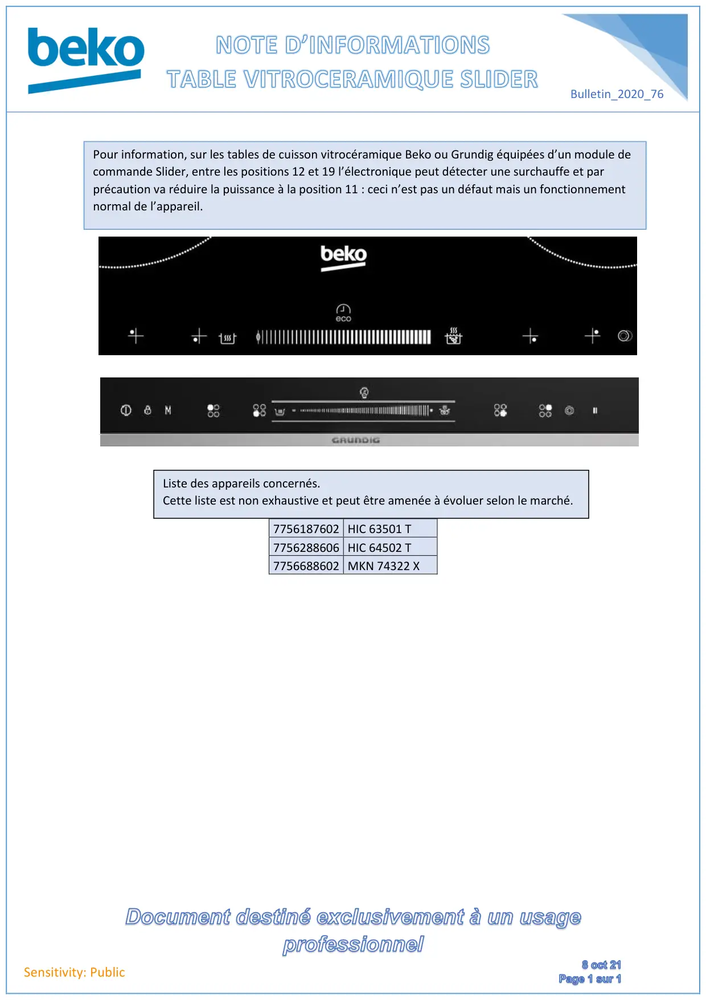

Note informations table vitro céramique surchauffe pendant fonctionnement

Bulletin_2020_76Sensitivity: Public7756187602 HIC 63501 T7756288606 HIC 64502 T7756688602 MKN 74322 XPour information, sur les tables de cuisson vitrocéramique Beko ou Grundig équipées d’un module decommande Slider, entre les positions 12 et 19 l’électronique peut détecter une surchauffe et parprécaution va réduire la puissance à la position 11 : ceci n’est pas un défaut mais un fonctionnementnormal de l’appareil.Liste des appareils concernés.Cette liste est non exhaustive et peut être amenée à évoluer selon le marché.
1 / 1